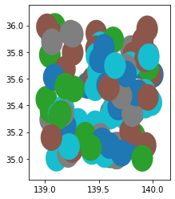
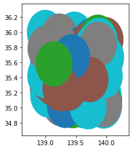
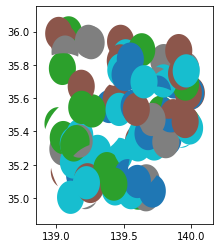
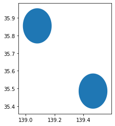
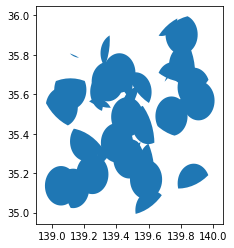
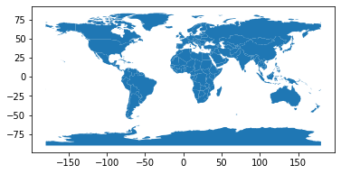

Geopandas¶
[3]:
import geopandas as gpd
import shapely.geometry
from mantle_utils.alg.vector import Vector
Geodataframeの作成
[2]:
import random
from shapely.geometry import Point
from pyproj import CRS
x_range = (139, 140)
y_range = (35, 36)
n_point_1 = (100)
n_point_2 = (100)
rand_class_1 = random.choices(['a', 'b', 'c', 'd', 'e'], k=n_point_1)
rand_class_2 = random.choices(['a', 'b', 'c', 'd', 'e'], k=n_point_2)
x_coords_1 = [random.uniform(*x_range) for i in range(n_point_1)]
y_coords_1 = [random.uniform(*y_range) for i in range(n_point_1)]
x_coords_2 = [random.uniform(*x_range) for i in range(n_point_2)]
y_coords_2 = [random.uniform(*y_range) for i in range(n_point_2)]
crs = CRS.from_user_input(4326)
points_1_gdf = gpd.GeoDataFrame(geometry=gpd.points_from_xy(x_coords_1, y_coords_1), crs = crs)
points_1_gdf['class'] = rand_class_1
polygon_1_gdf = points_1_gdf.copy()
polygon_1_gdf['geometry'] = points_1_gdf.buffer(0.1)
polygon_1_gdf.plot(column='class')
points_2_gdf = gpd.GeoDataFrame(geometry=gpd.points_from_xy(x_coords_2, y_coords_2), crs = crs)
points_2_gdf['class'] = rand_class_2
polygon_2_gdf = points_2_gdf.copy()
polygon_2_gdf['geometry'] = points_2_gdf.buffer(0.3)
polygon_2_gdf.plot(column='class')
/cats/datastore3/anaconda3_envs/takahisa/lib/python3.7/site-packages/ipykernel_launcher.py:23: UserWarning: Geometry is in a geographic CRS. Results from 'buffer' are likely incorrect. Use 'GeoSeries.to_crs()' to re-project geometries to a projected CRS before this operation.
/cats/datastore3/anaconda3_envs/takahisa/lib/python3.7/site-packages/ipykernel_launcher.py:29: UserWarning: Geometry is in a geographic CRS. Results from 'buffer' are likely incorrect. Use 'GeoSeries.to_crs()' to re-project geometries to a projected CRS before this operation.
[2]:
<matplotlib.axes._subplots.AxesSubplot at 0x7fd774761b10>


[8]:
po_1_v = Vector(polygon_1_gdf)
po_2_v = Vector(polygon_2_gdf)
tmp_v = po_1_v.difference(po_2_v)
tmp_v.plot(column='class')
[8]:
<matplotlib.axes._subplots.AxesSubplot at 0x7fd77473f610>

[11]:
po_1_v.gdf.total_bounds
[11]:
array([138.91495006, 34.90307304, 140.098773 , 36.09183615])
[7]:
int_v
[7]:
| geometry | |
|---|---|
| 0 | POLYGON ((139.50014 35.65670, 139.49966 35.646... |
| 1 | POLYGON ((139.52186 35.66757, 139.52892 35.664... |
| 2 | POLYGON ((139.70703 35.97933, 139.70655 35.969... |
| 3 | POLYGON ((139.20902 35.32835, 139.20854 35.318... |
| 4 | POLYGON EMPTY |
| ... | ... |
| 95 | POLYGON EMPTY |
| 96 | POLYGON EMPTY |
| 97 | POLYGON ((139.61131 35.09420, 139.61083 35.084... |
| 98 | POLYGON EMPTY |
| 99 | POLYGON EMPTY |
100 rows × 1 columns
[46]:
polygon_1_v = Vector(polygon_1_gdf)
polygon_1_v[0:3][[True, True, False]].plot()
[46]:
<matplotlib.axes._subplots.AxesSubplot at 0x7fb74a98c1d0>

[35]:
tmp_gdf = gpd.GeoDataFrame(geometry=polygon_1_gdf.intersection(polygon_2_gdf))
tmp_gdf[~tmp_gdf.is_empty].plot()
[35]:
<matplotlib.axes._subplots.AxesSubplot at 0x7fb75122fc90>

[33]:
points_gdf.representative_point()
[33]:
0 POINT (139.80215 35.83012)
1 POINT (139.56260 35.00986)
2 POINT (139.45344 35.24756)
3 POINT (139.95679 35.66969)
4 POINT (139.57810 35.83197)
...
95 POINT (139.85639 35.63182)
96 POINT (139.28897 35.80853)
97 POINT (139.65650 35.13089)
98 POINT (139.05659 35.45623)
99 POINT (139.39110 35.36762)
Length: 100, dtype: geometry
[27]:
type(polygon_gdf.area)
/cats/datastore3/anaconda3_envs/takahisa/lib/python3.7/site-packages/ipykernel_launcher.py:1: UserWarning: Geometry is in a geographic CRS. Results from 'area' are likely incorrect. Use 'GeoSeries.to_crs()' to re-project geometries to a projected CRS before this operation.
"""Entry point for launching an IPython kernel.
[27]:
pandas.core.series.Series
[6]:
points_gdf.to_file('data/r_points.shp')
[3]:
polygon_gdf.to_file('data/r_points_buff.shp')
[4]:
world = gpd.read_file(gpd.datasets.get_path('naturalearth_lowres'))
world.plot()
[4]:
<matplotlib.axes._subplots.AxesSubplot at 0x7f7ee52a1810>

[5]:
points_gdf
[5]:
| geometry | class | |
|---|---|---|
| 0 | POINT (139.80215 35.83012) | a |
| 1 | POINT (139.56260 35.00986) | c |
| 2 | POINT (139.45344 35.24756) | a |
| 3 | POINT (139.95679 35.66969) | b |
| 4 | POINT (139.57810 35.83197) | a |
| ... | ... | ... |
| 95 | POINT (139.85639 35.63182) | e |
| 96 | POINT (139.28897 35.80853) | e |
| 97 | POINT (139.65650 35.13089) | b |
| 98 | POINT (139.05659 35.45623) | a |
| 99 | POINT (139.39110 35.36762) | d |
100 rows × 2 columns
[17]:
type(points_gdf.shape)
[17]:
tuple
[15]:
len(points_gdf)
[15]:
100
[13]:
points_gdf[0:2]
[13]:
| geometry | class | |
|---|---|---|
| 0 | POINT (139.80215 35.83012) | a |
| 1 | POINT (139.56260 35.00986) | c |
to_json¶
It will not convert crs
[10]:
points_gdf[0:3].to_json(na='null', show_bbox=False)
[10]:
'{"type": "FeatureCollection", "features": [{"id": "0", "type": "Feature", "properties": {"class": "a"}, "geometry": {"type": "Point", "coordinates": [139.8021535768139, 35.830116126832735]}}, {"id": "1", "type": "Feature", "properties": {"class": "c"}, "geometry": {"type": "Point", "coordinates": [139.5625982304562, 35.00985903496143]}}, {"id": "2", "type": "Feature", "properties": {"class": "a"}, "geometry": {"type": "Point", "coordinates": [139.45343932203696, 35.247557751949664]}}]}'
[11]:
gdf = gpd.read_file('data/r_points_32654.shp')
gdf.to_json()
[11]:
'{"type": "FeatureCollection", "features": [{"id": "0", "type": "Feature", "properties": {"class": "a"}, "geometry": {"type": "Point", "coordinates": [391807.377101384, 3965768.2162633785]}}, {"id": "1", "type": "Feature", "properties": {"class": "c"}, "geometry": {"type": "Point", "coordinates": [368845.7032082516, 3875080.3686444876]}}, {"id": "2", "type": "Feature", "properties": {"class": "a"}, "geometry": {"type": "Point", "coordinates": [359294.3825147571, 3901592.930920788]}}, {"id": "3", "type": "Feature", "properties": {"class": "b"}, "geometry": {"type": "Point", "coordinates": [405585.59010235075, 3947814.4281419255]}}, {"id": "4", "type": "Feature", "properties": {"class": "a"}, "geometry": {"type": "Point", "coordinates": [371572.0805592809, 3966245.0322919525]}}, {"id": "5", "type": "Feature", "properties": {"class": "e"}, "geometry": {"type": "Point", "coordinates": [360215.8186737846, 3935019.1132948725]}}, {"id": "6", "type": "Feature", "properties": {"class": "a"}, "geometry": {"type": "Point", "coordinates": [328912.68195076275, 3962653.293980441]}}, {"id": "7", "type": "Feature", "properties": {"class": "a"}, "geometry": {"type": "Point", "coordinates": [394736.2302528735, 3970904.3929815013]}}, {"id": "8", "type": "Feature", "properties": {"class": "b"}, "geometry": {"type": "Point", "coordinates": [331096.6864845783, 3960270.6491313595]}}, {"id": "9", "type": "Feature", "properties": {"class": "a"}, "geometry": {"type": "Point", "coordinates": [372814.16375830607, 3958843.809020047]}}, {"id": "10", "type": "Feature", "properties": {"class": "a"}, "geometry": {"type": "Point", "coordinates": [349026.22587834223, 3919385.215750637]}}, {"id": "11", "type": "Feature", "properties": {"class": "d"}, "geometry": {"type": "Point", "coordinates": [358273.76029339613, 3907403.3623373285]}}, {"id": "12", "type": "Feature", "properties": {"class": "e"}, "geometry": {"type": "Point", "coordinates": [402296.2596241512, 3960561.8677406707]}}, {"id": "13", "type": "Feature", "properties": {"class": "d"}, "geometry": {"type": "Point", "coordinates": [344546.1824511837, 3893360.3495421996]}}, {"id": "14", "type": "Feature", "properties": {"class": "d"}, "geometry": {"type": "Point", "coordinates": [372913.54034179327, 3882595.8916983274]}}, {"id": "15", "type": "Feature", "properties": {"class": "c"}, "geometry": {"type": "Point", "coordinates": [327339.095580171, 3903389.5460463786]}}, {"id": "16", "type": "Feature", "properties": {"class": "e"}, "geometry": {"type": "Point", "coordinates": [337000.8937043563, 3904836.1870081997]}}, {"id": "17", "type": "Feature", "properties": {"class": "a"}, "geometry": {"type": "Point", "coordinates": [365560.2368636691, 3881159.043450968]}}, {"id": "18", "type": "Feature", "properties": {"class": "d"}, "geometry": {"type": "Point", "coordinates": [345875.2982130418, 3880704.712438339]}}, {"id": "19", "type": "Feature", "properties": {"class": "a"}, "geometry": {"type": "Point", "coordinates": [403316.8748316665, 3874633.849218356]}}, {"id": "20", "type": "Feature", "properties": {"class": "c"}, "geometry": {"type": "Point", "coordinates": [318881.40238909674, 3921550.489880526]}}, {"id": "21", "type": "Feature", "properties": {"class": "d"}, "geometry": {"type": "Point", "coordinates": [380174.05080462166, 3886895.247801154]}}, {"id": "22", "type": "Feature", "properties": {"class": "d"}, "geometry": {"type": "Point", "coordinates": [389380.3396053852, 3980097.1688549924]}}, {"id": "23", "type": "Feature", "properties": {"class": "c"}, "geometry": {"type": "Point", "coordinates": [403682.67655321537, 3929470.272681043]}}, {"id": "24", "type": "Feature", "properties": {"class": "b"}, "geometry": {"type": "Point", "coordinates": [405341.07692949986, 3892881.2405700474]}}, {"id": "25", "type": "Feature", "properties": {"class": "e"}, "geometry": {"type": "Point", "coordinates": [369001.5647785146, 3941036.899659442]}}, {"id": "26", "type": "Feature", "properties": {"class": "b"}, "geometry": {"type": "Point", "coordinates": [322396.6281038346, 3885420.3518220605]}}, {"id": "27", "type": "Feature", "properties": {"class": "e"}, "geometry": {"type": "Point", "coordinates": [408637.74558411085, 3944484.642418481]}}, {"id": "28", "type": "Feature", "properties": {"class": "e"}, "geometry": {"type": "Point", "coordinates": [339805.79605409154, 3896936.2721996526]}}, {"id": "29", "type": "Feature", "properties": {"class": "e"}, "geometry": {"type": "Point", "coordinates": [319911.9495461866, 3965891.974883819]}}, {"id": "30", "type": "Feature", "properties": {"class": "c"}, "geometry": {"type": "Point", "coordinates": [368604.5779201345, 3971147.2811316103]}}, {"id": "31", "type": "Feature", "properties": {"class": "e"}, "geometry": {"type": "Point", "coordinates": [340847.33355728036, 3935655.10888596]}}, {"id": "32", "type": "Feature", "properties": {"class": "b"}, "geometry": {"type": "Point", "coordinates": [370052.6740167535, 3944490.499002067]}}, {"id": "33", "type": "Feature", "properties": {"class": "d"}, "geometry": {"type": "Point", "coordinates": [361863.21507391887, 3910314.941746749]}}, {"id": "34", "type": "Feature", "properties": {"class": "c"}, "geometry": {"type": "Point", "coordinates": [318794.5424429284, 3935203.1360616228]}}, {"id": "35", "type": "Feature", "properties": {"class": "a"}, "geometry": {"type": "Point", "coordinates": [373696.90219887637, 3909739.4393000607]}}, {"id": "36", "type": "Feature", "properties": {"class": "d"}, "geometry": {"type": "Point", "coordinates": [396527.45976592496, 3977585.086065845]}}, {"id": "37", "type": "Feature", "properties": {"class": "b"}, "geometry": {"type": "Point", "coordinates": [334561.86678493395, 3890141.8276328137]}}, {"id": "38", "type": "Feature", "properties": {"class": "a"}, "geometry": {"type": "Point", "coordinates": [396338.38358962454, 3889103.3489288823]}}, {"id": "39", "type": "Feature", "properties": {"class": "c"}, "geometry": {"type": "Point", "coordinates": [345077.62973466376, 3884058.163697022]}}, {"id": "40", "type": "Feature", "properties": {"class": "c"}, "geometry": {"type": "Point", "coordinates": [407630.88179119996, 3890347.4167300374]}}, {"id": "41", "type": "Feature", "properties": {"class": "a"}, "geometry": {"type": "Point", "coordinates": [374197.66277041833, 3976367.5588299576]}}, {"id": "42", "type": "Feature", "properties": {"class": "c"}, "geometry": {"type": "Point", "coordinates": [398325.41440395394, 3968470.0400660005]}}, {"id": "43", "type": "Feature", "properties": {"class": "a"}, "geometry": {"type": "Point", "coordinates": [320049.09049013205, 3942735.7038381873]}}, {"id": "44", "type": "Feature", "properties": {"class": "c"}, "geometry": {"type": "Point", "coordinates": [378310.5140536496, 3962856.0538531127]}}, {"id": "45", "type": "Feature", "properties": {"class": "b"}, "geometry": {"type": "Point", "coordinates": [336677.8906616744, 3955289.9047249984]}}, {"id": "46", "type": "Feature", "properties": {"class": "c"}, "geometry": {"type": "Point", "coordinates": [372215.5019683881, 3970026.4932407835]}}, {"id": "47", "type": "Feature", "properties": {"class": "d"}, "geometry": {"type": "Point", "coordinates": [337604.29322909005, 3970509.4523568046]}}, {"id": "48", "type": "Feature", "properties": {"class": "d"}, "geometry": {"type": "Point", "coordinates": [347922.67752948636, 3888403.9797483636]}}, {"id": "49", "type": "Feature", "properties": {"class": "a"}, "geometry": {"type": "Point", "coordinates": [387752.15917823, 3925833.5775040914]}}, {"id": "50", "type": "Feature", "properties": {"class": "c"}, "geometry": {"type": "Point", "coordinates": [341270.22681029246, 3912565.6656125113]}}, {"id": "51", "type": "Feature", "properties": {"class": "b"}, "geometry": {"type": "Point", "coordinates": [320292.89733150916, 3915690.0049228184]}}, {"id": "52", "type": "Feature", "properties": {"class": "d"}, "geometry": {"type": "Point", "coordinates": [353241.4816487309, 3930058.7864530114]}}, {"id": "53", "type": "Feature", "properties": {"class": "a"}, "geometry": {"type": "Point", "coordinates": [391486.69206919044, 3880604.6937653353]}}, {"id": "54", "type": "Feature", "properties": {"class": "e"}, "geometry": {"type": "Point", "coordinates": [357427.257782073, 3965194.6219485295]}}, {"id": "55", "type": "Feature", "properties": {"class": "d"}, "geometry": {"type": "Point", "coordinates": [384701.0870222018, 3952026.328348264]}}, {"id": "56", "type": "Feature", "properties": {"class": "b"}, "geometry": {"type": "Point", "coordinates": [396148.21427573793, 3982653.7651694827]}}, {"id": "57", "type": "Feature", "properties": {"class": "b"}, "geometry": {"type": "Point", "coordinates": [344613.7373638609, 3977841.9163947646]}}, {"id": "58", "type": "Feature", "properties": {"class": "e"}, "geometry": {"type": "Point", "coordinates": [402556.679766148, 3896051.649306159]}}, {"id": "59", "type": "Feature", "properties": {"class": "b"}, "geometry": {"type": "Point", "coordinates": [332230.28095451556, 3965958.9196629976]}}, {"id": "60", "type": "Feature", "properties": {"class": "c"}, "geometry": {"type": "Point", "coordinates": [341817.53666544205, 3927985.0048554316]}}, {"id": "61", "type": "Feature", "properties": {"class": "d"}, "geometry": {"type": "Point", "coordinates": [339051.5844645441, 3893402.5078535806]}}, {"id": "62", "type": "Feature", "properties": {"class": "d"}, "geometry": {"type": "Point", "coordinates": [367572.5129805993, 3897582.298558758]}}, {"id": "63", "type": "Feature", "properties": {"class": "b"}, "geometry": {"type": "Point", "coordinates": [399073.80638003297, 3960194.2600349416]}}, {"id": "64", "type": "Feature", "properties": {"class": "e"}, "geometry": {"type": "Point", "coordinates": [366004.76412740716, 3974370.5291829654]}}, {"id": "65", "type": "Feature", "properties": {"class": "e"}, "geometry": {"type": "Point", "coordinates": [405511.8613853592, 3955788.412254232]}}, {"id": "66", "type": "Feature", "properties": {"class": "d"}, "geometry": {"type": "Point", "coordinates": [354637.91583959915, 3942690.227233035]}}, {"id": "67", "type": "Feature", "properties": {"class": "a"}, "geometry": {"type": "Point", "coordinates": [338069.264842503, 3879773.1892424123]}}, {"id": "68", "type": "Feature", "properties": {"class": "c"}, "geometry": {"type": "Point", "coordinates": [390670.9373259191, 3937252.206389549]}}, {"id": "69", "type": "Feature", "properties": {"class": "c"}, "geometry": {"type": "Point", "coordinates": [380130.43359681044, 3934000.7620803993]}}, {"id": "70", "type": "Feature", "properties": {"class": "a"}, "geometry": {"type": "Point", "coordinates": [321276.8532037605, 3944087.464799181]}}, {"id": "71", "type": "Feature", "properties": {"class": "c"}, "geometry": {"type": "Point", "coordinates": [332728.9790377356, 3885695.13543713]}}, {"id": "72", "type": "Feature", "properties": {"class": "a"}, "geometry": {"type": "Point", "coordinates": [326798.6669941969, 3927893.1264412515]}}, {"id": "73", "type": "Feature", "properties": {"class": "d"}, "geometry": {"type": "Point", "coordinates": [366139.7888355836, 3903927.2318656505]}}, {"id": "74", "type": "Feature", "properties": {"class": "c"}, "geometry": {"type": "Point", "coordinates": [391778.7972521506, 3878685.98319286]}}, {"id": "75", "type": "Feature", "properties": {"class": "e"}, "geometry": {"type": "Point", "coordinates": [343308.934338325, 3876247.3255707705]}}, {"id": "76", "type": "Feature", "properties": {"class": "b"}, "geometry": {"type": "Point", "coordinates": [330850.42777706357, 3905453.2830193145]}}, {"id": "77", "type": "Feature", "properties": {"class": "d"}, "geometry": {"type": "Point", "coordinates": [371923.7511654892, 3914095.496799379]}}, {"id": "78", "type": "Feature", "properties": {"class": "e"}, "geometry": {"type": "Point", "coordinates": [343242.4985463142, 3903961.483956606]}}, {"id": "79", "type": "Feature", "properties": {"class": "b"}, "geometry": {"type": "Point", "coordinates": [325652.6393280709, 3962319.570053574]}}, {"id": "80", "type": "Feature", "properties": {"class": "a"}, "geometry": {"type": "Point", "coordinates": [362601.8606998244, 3899889.5253636036]}}, {"id": "81", "type": "Feature", "properties": {"class": "d"}, "geometry": {"type": "Point", "coordinates": [402543.51959215384, 3944932.80613198]}}, {"id": "82", "type": "Feature", "properties": {"class": "c"}, "geometry": {"type": "Point", "coordinates": [383780.73104602564, 3928679.519293095]}}, {"id": "83", "type": "Feature", "properties": {"class": "a"}, "geometry": {"type": "Point", "coordinates": [381171.13257805875, 3890290.136278853]}}, {"id": "84", "type": "Feature", "properties": {"class": "a"}, "geometry": {"type": "Point", "coordinates": [327627.8039136628, 3920444.201974133]}}, {"id": "85", "type": "Feature", "properties": {"class": "b"}, "geometry": {"type": "Point", "coordinates": [392663.1415436085, 3920518.1404981697]}}, {"id": "86", "type": "Feature", "properties": {"class": "e"}, "geometry": {"type": "Point", "coordinates": [351417.3653003271, 3929043.879719506]}}, {"id": "87", "type": "Feature", "properties": {"class": "e"}, "geometry": {"type": "Point", "coordinates": [389922.8793140733, 3969316.8834376056]}}, {"id": "88", "type": "Feature", "properties": {"class": "c"}, "geometry": {"type": "Point", "coordinates": [335683.91899700253, 3974478.7497070776]}}, {"id": "89", "type": "Feature", "properties": {"class": "c"}, "geometry": {"type": "Point", "coordinates": [382290.9921522791, 3978024.212534808]}}, {"id": "90", "type": "Feature", "properties": {"class": "c"}, "geometry": {"type": "Point", "coordinates": [340411.4269835217, 3942249.084118384]}}, {"id": "91", "type": "Feature", "properties": {"class": "c"}, "geometry": {"type": "Point", "coordinates": [386857.78192789556, 3930577.4601617907]}}, {"id": "92", "type": "Feature", "properties": {"class": "c"}, "geometry": {"type": "Point", "coordinates": [324229.82122363173, 3910435.449613555]}}, {"id": "93", "type": "Feature", "properties": {"class": "b"}, "geometry": {"type": "Point", "coordinates": [372089.71512360213, 3888215.734983792]}}, {"id": "94", "type": "Feature", "properties": {"class": "b"}, "geometry": {"type": "Point", "coordinates": [337599.08172836597, 3974487.1574285063]}}, {"id": "95", "type": "Feature", "properties": {"class": "e"}, "geometry": {"type": "Point", "coordinates": [396450.1087666497, 3943715.5696311747]}}, {"id": "96", "type": "Feature", "properties": {"class": "e"}, "geometry": {"type": "Point", "coordinates": [345409.66215748386, 3964062.284286596]}}, {"id": "97", "type": "Feature", "properties": {"class": "b"}, "geometry": {"type": "Point", "coordinates": [377594.8654832881, 3888384.103524417]}}, {"id": "98", "type": "Feature", "properties": {"class": "a"}, "geometry": {"type": "Point", "coordinates": [323639.48616832047, 3925374.020842437]}}, {"id": "99", "type": "Feature", "properties": {"class": "d"}, "geometry": {"type": "Point", "coordinates": [353838.8266688845, 3915000.3671581685]}}]}'